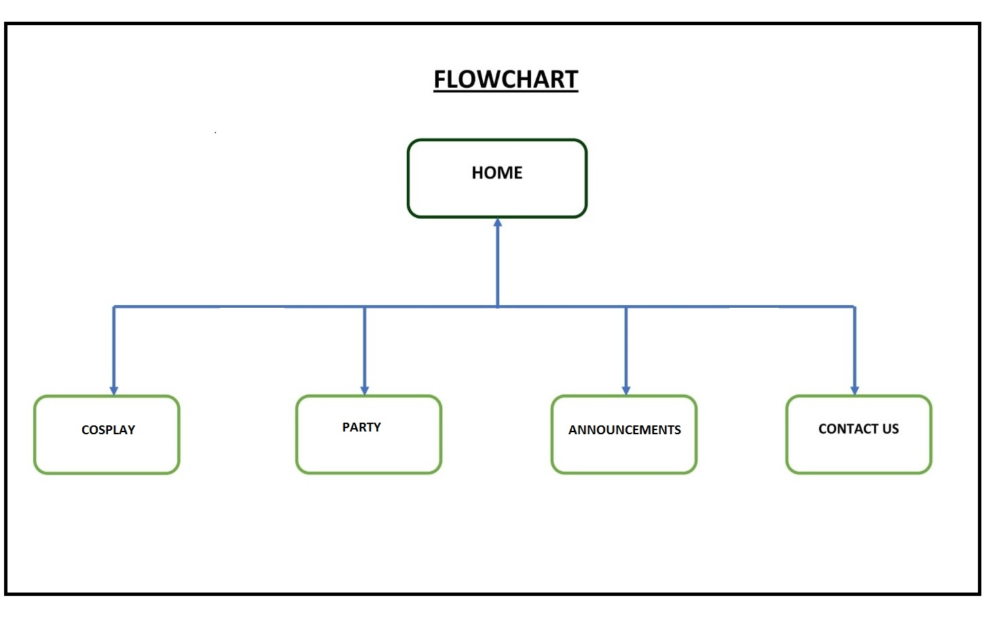

Name: Irfan Shaik
Login: JC488483
The website is proposed to further advance the marketing, moslty trying to attract teenagers & adults by this, which should increase the number of both party-goers and the people who get costumes. The site is a way to likely make it simpler for people to get in touch with costume-makers and give them a best pricelist for the different products.
If this site is effective then the client should see an improvement in both the number of people who are buying costumes and the party-goers as well. By increasing the age range of more youngsters to availing the website would also mean that the website is working in a effective way in getting more benefits to the company.
The target audience are the people who are becoming more interested towards Cos-play, more particularly youngsters (teenagers and people in their twenties).
